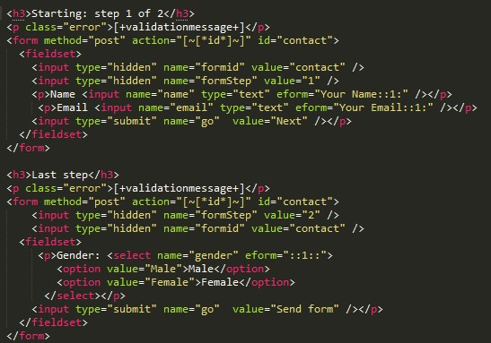

Pauta 3.2 Predecible
Hacer que las páginas web aparezcan y operen de manera predecible.
La información y el manejo de la interfáz de usuario deben ser comprensibles.
Hacer que las páginas web aparezcan y operen de manera predecible.
Cuando cualquier componente recibe el foco, no inicia ningún cambio en el contexto.
En un formulario de varias páginas o partes al presionar el botón submit, moverá el focus automaticamente al sig campo de entrada de la sig parte del formulario, ya sea que este en una nueva ventana o no.
El cambio de estado en cualquier componente de la interfaz de usuario no provoca automáticamente un cambio en el contexto a menos que el usuario haya sido advertido de ese comportamiento antes de usar el componente.
Al presionar el boton submit, deberá haber algún cambio en la página web actual o en alguno de sus componentes.